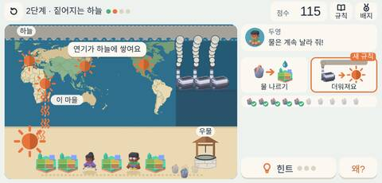
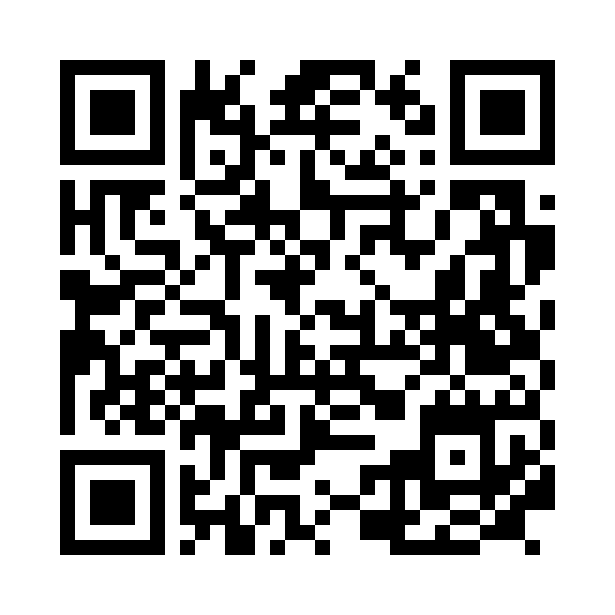
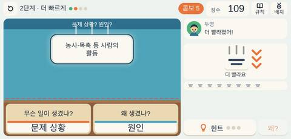
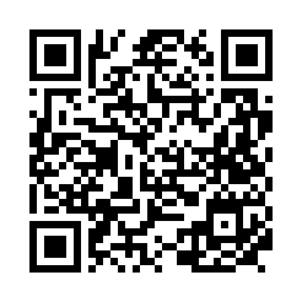

먼 연기, 가까운 가뭄
물을 나르다 굴뚝에 뚜껑을 덮어 봐요. 먼 곳의 연기가 줄면 하늘이 맑아지고 우리 마을 가뭄도 나아지는 걸 겪어요.

그림: Kenney (CC0) · 지도: Natural Earth (퍼블릭 도메인)
학생들은 마을의 가뭄을 버티며 물을 나르다가, 먼 곳의 굴뚝 연기를 줄이자 하늘이 맑아지고 가뭄도 나아지는 경험을 합니다. 지구촌 문제가 멀리 떨어진 곳과 이어져 있음을 깨닫고, 분류 게임에서 문제 상황과 원인을 가려 봅니다.
다루는 개념 지구촌 문제의 원인대기 오염가뭄국경을 넘는 문제

물을 나르다 굴뚝에 뚜껑을 덮어 봐요. 먼 곳의 연기가 줄면 하늘이 맑아지고 우리 마을 가뭄도 나아지는 걸 겪어요.


카드를 문제 상황·원인 칸에 나눠 담아요.
